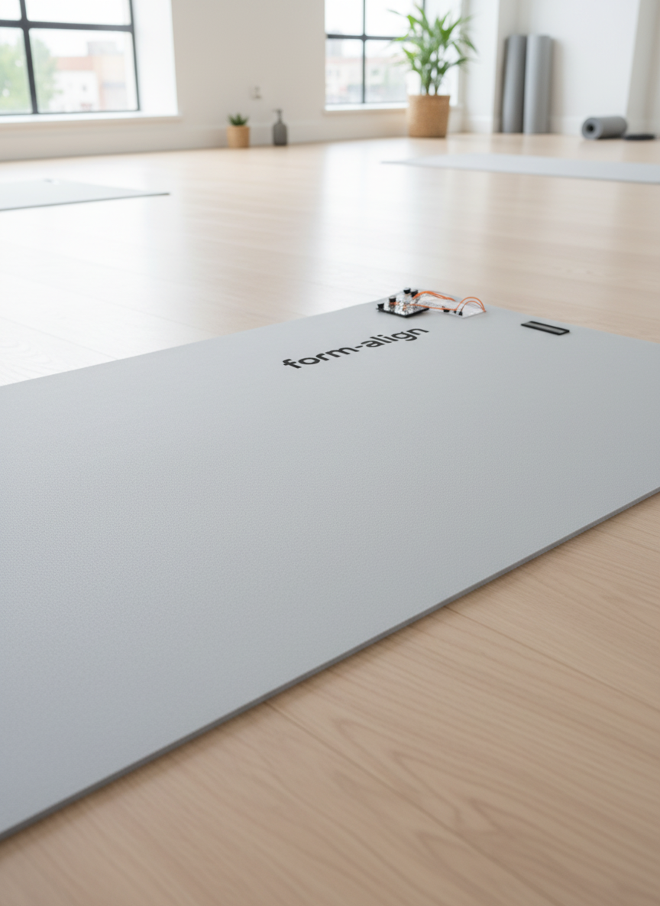

Beginner Practitioners
Ages 18-45 building correct movement patterns without constant instructor supervision.
Design Process
The initial challenge centred on improving form accuracy and injury prevention in Pilates practice. Preliminary interviews and observation showed that users lack real-time proprioceptive feedback and often develop compensatory movement patterns.
Ages 18-45 building correct movement patterns without constant instructor supervision.
Users recovering from injury who require precise movement tracking and progress monitoring.
Intermediate users maintaining form quality during solo home practice.
Multiple sensing strategies were explored through rapid prototyping. The selected architecture used hybrid sensing (IMU + pressure array), Bluetooth communication, and real-time mobile + haptic feedback.

IMU Accuracy: +/-1.8 degrees vs reference
BLE Reliability: 99%+ packet delivery at test range
Participants: n=12 think-aloud sessions
Key Insight: calibration flow needed UX simplification